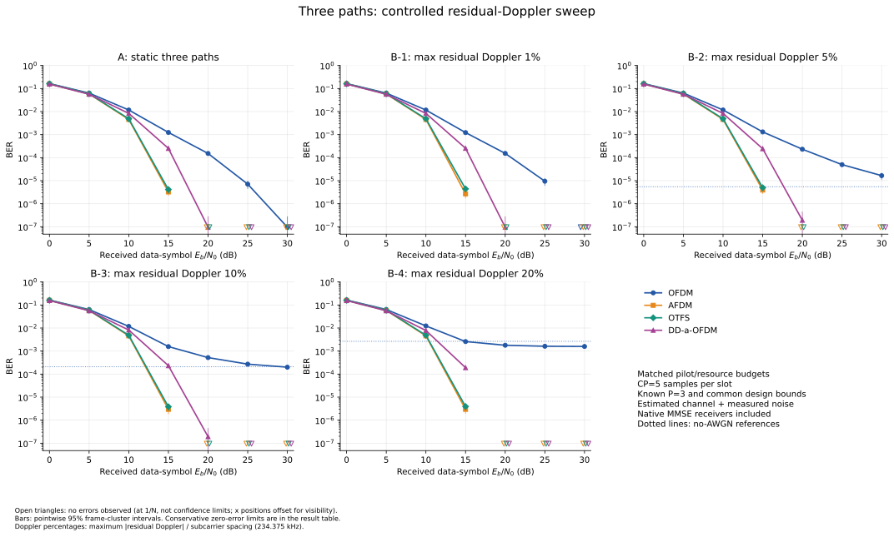

각 방식·조건·Eb/N0에서 10,485,760 정보 비트를 측정했다. 데이터 심볼 에너지 Es=1, 비부호화 Gray 16-QAM이며, Eb/N0는 수신 데이터 심볼 에너지 기준이다.
신뢰구간은 독립적으로 다시 생성한 프레임을 기준으로 계산한 점별 95% 구간이다. 양의 오류 수에는 근사 군집 표준오차를, 오류 0개에는 완전한 프레임의 오류 사건에 대한 보수적 상한을 쓴다. 프레임 내부 비트 독립을 가정하지 않아 오류 미관측 구간의 상한은 넓을 수 있다. 오류가 관측되지 않았다는 사실이 정확한 BER 0이나 방식 간 동등성을 증명하지는 않는다.
그래프의 빈 아래 삼각형은 오류 미관측을 1/N 위치에 표시한 것으로, BER 추정치나 신뢰 상한이 아니다. 겹침을 피하려고 이 삼각형만 가로 위치를 조금 벌렸다. 양의 BER에는 신뢰구간 막대를 표시하며, 실제 구간과 오류 발생 프레임 수는 아래 표에 있다.
최고점·이탈 시점의 공통 도플러를 완전히 보정했다. CP·파일럿 없는 단위 이득 채널에서 네 파형이 같은 16-QAM AWGN 이론 기준을 따르는지 확인하는 실행이다.

| 조건 | 방식 | Eb/N0 | 오류 수 / 측정 비트 | 관측 BER | 95% 프레임 기준 구간 |
|---|---|---|---|---|---|
| peak | OFDM | AWGN 없음 | 0 / 10,485,760 | 오류 미관측 | [0, 0.022792] 오류 발생 프레임 0/160 |
| peak | AFDM | AWGN 없음 | 0 / 10,485,760 | 오류 미관측 | [0, 0.022792] 오류 발생 프레임 0/160 |
| peak | OTFS | AWGN 없음 | 0 / 10,485,760 | 오류 미관측 | [0, 0.022792] 오류 발생 프레임 0/160 |
| peak | DD-a-OFDM | AWGN 없음 | 0 / 10,485,760 | 오류 미관측 | [0, 0.022792] 오류 발생 프레임 0/160 |
| peak | OFDM | 0 dB | 1,479,679 / 10,485,760 | 0.141113 | [0.14092, 0.14131] 오류 발생 프레임 160/160 |
| peak | AFDM | 0 dB | 1,477,690 / 10,485,760 | 0.140924 | [0.14072, 0.14113] 오류 발생 프레임 160/160 |
| peak | OTFS | 0 dB | 1,478,736 / 10,485,760 | 0.141023 | [0.14083, 0.14121] 오류 발생 프레임 160/160 |
| peak | DD-a-OFDM | 0 dB | 1,479,679 / 10,485,760 | 0.141113 | [0.14092, 0.14131] 오류 발생 프레임 160/160 |
| peak | OFDM | 5 dB | 439,513 / 10,485,760 | 0.0419152 | [0.041794, 0.042036] 오류 발생 프레임 160/160 |
| peak | AFDM | 5 dB | 439,577 / 10,485,760 | 0.0419213 | [0.041803, 0.04204] 오류 발생 프레임 160/160 |
| peak | OTFS | 5 dB | 438,857 / 10,485,760 | 0.0418527 | [0.041724, 0.041981] 오류 발생 프레임 160/160 |
| peak | DD-a-OFDM | 5 dB | 439,513 / 10,485,760 | 0.0419152 | [0.041794, 0.042036] 오류 발생 프레임 160/160 |
| peak | OFDM | 10 dB | 18,476 / 10,485,760 | 0.00176201 | [0.0017367, 0.0017873] 오류 발생 프레임 160/160 |
| peak | AFDM | 10 dB | 18,260 / 10,485,760 | 0.00174141 | [0.0017167, 0.0017661] 오류 발생 프레임 160/160 |
| peak | OTFS | 10 dB | 18,434 / 10,485,760 | 0.001758 | [0.0017314, 0.0017846] 오류 발생 프레임 160/160 |
| peak | DD-a-OFDM | 10 dB | 18,476 / 10,485,760 | 0.00176201 | [0.0017367, 0.0017873] 오류 발생 프레임 160/160 |
| peak | OFDM | 15 dB | 1 / 10,485,760 | 9.53674e-08 | [0, 2.8228e-07] 오류 발생 프레임 1/160 |
| peak | AFDM | 15 dB | 4 / 10,485,760 | 3.8147e-07 | [1.118e-08, 7.5176e-07] 오류 발생 프레임 4/160 |
| peak | OTFS | 15 dB | 1 / 10,485,760 | 9.53674e-08 | [0, 2.8228e-07] 오류 발생 프레임 1/160 |
| peak | DD-a-OFDM | 15 dB | 1 / 10,485,760 | 9.53674e-08 | [0, 2.8228e-07] 오류 발생 프레임 1/160 |
| peak | OFDM | 20 dB | 0 / 10,485,760 | 오류 미관측 | [0, 0.022792] 오류 발생 프레임 0/160 |
| peak | AFDM | 20 dB | 0 / 10,485,760 | 오류 미관측 | [0, 0.022792] 오류 발생 프레임 0/160 |
| peak | OTFS | 20 dB | 0 / 10,485,760 | 오류 미관측 | [0, 0.022792] 오류 발생 프레임 0/160 |
| peak | DD-a-OFDM | 20 dB | 0 / 10,485,760 | 오류 미관측 | [0, 0.022792] 오류 발생 프레임 0/160 |
| peak | OFDM | 25 dB | 0 / 10,485,760 | 오류 미관측 | [0, 0.022792] 오류 발생 프레임 0/160 |
| peak | AFDM | 25 dB | 0 / 10,485,760 | 오류 미관측 | [0, 0.022792] 오류 발생 프레임 0/160 |
| peak | OTFS | 25 dB | 0 / 10,485,760 | 오류 미관측 | [0, 0.022792] 오류 발생 프레임 0/160 |
| peak | DD-a-OFDM | 25 dB | 0 / 10,485,760 | 오류 미관측 | [0, 0.022792] 오류 발생 프레임 0/160 |
| peak | OFDM | 30 dB | 0 / 10,485,760 | 오류 미관측 | [0, 0.022792] 오류 발생 프레임 0/160 |
| peak | AFDM | 30 dB | 0 / 10,485,760 | 오류 미관측 | [0, 0.022792] 오류 발생 프레임 0/160 |
| peak | OTFS | 30 dB | 0 / 10,485,760 | 오류 미관측 | [0, 0.022792] 오류 발생 프레임 0/160 |
| peak | DD-a-OFDM | 30 dB | 0 / 10,485,760 | 오류 미관측 | [0, 0.022792] 오류 발생 프레임 0/160 |
| exit | OFDM | AWGN 없음 | 0 / 10,485,760 | 오류 미관측 | [0, 0.022792] 오류 발생 프레임 0/160 |
| exit | AFDM | AWGN 없음 | 0 / 10,485,760 | 오류 미관측 | [0, 0.022792] 오류 발생 프레임 0/160 |
| exit | OTFS | AWGN 없음 | 0 / 10,485,760 | 오류 미관측 | [0, 0.022792] 오류 발생 프레임 0/160 |
| exit | DD-a-OFDM | AWGN 없음 | 0 / 10,485,760 | 오류 미관측 | [0, 0.022792] 오류 발생 프레임 0/160 |
| exit | OFDM | 0 dB | 1,477,910 / 10,485,760 | 0.140944 | [0.14074, 0.14115] 오류 발생 프레임 160/160 |
| exit | AFDM | 0 dB | 1,476,981 / 10,485,760 | 0.140856 | [0.14066, 0.14105] 오류 발생 프레임 160/160 |
| exit | OTFS | 0 dB | 1,478,692 / 10,485,760 | 0.141019 | [0.14081, 0.14122] 오류 발생 프레임 160/160 |
| exit | DD-a-OFDM | 0 dB | 1,477,910 / 10,485,760 | 0.140944 | [0.14074, 0.14115] 오류 발생 프레임 160/160 |
| exit | OFDM | 5 dB | 439,307 / 10,485,760 | 0.0418956 | [0.041779, 0.042012] 오류 발생 프레임 160/160 |
| exit | AFDM | 5 dB | 439,181 / 10,485,760 | 0.0418836 | [0.041765, 0.042002] 오류 발생 프레임 160/160 |
| exit | OTFS | 5 dB | 438,927 / 10,485,760 | 0.0418593 | [0.041734, 0.041985] 오류 발생 프레임 160/160 |
| exit | DD-a-OFDM | 5 dB | 439,307 / 10,485,760 | 0.0418956 | [0.041779, 0.042012] 오류 발생 프레임 160/160 |
| exit | OFDM | 10 dB | 18,432 / 10,485,760 | 0.00175781 | [0.0017323, 0.0017833] 오류 발생 프레임 160/160 |
| exit | AFDM | 10 dB | 18,209 / 10,485,760 | 0.00173655 | [0.0017124, 0.0017607] 오류 발생 프레임 160/160 |
| exit | OTFS | 10 dB | 18,322 / 10,485,760 | 0.00174732 | [0.0017246, 0.0017701] 오류 발생 프레임 160/160 |
| exit | DD-a-OFDM | 10 dB | 18,432 / 10,485,760 | 0.00175781 | [0.0017323, 0.0017833] 오류 발생 프레임 160/160 |
| exit | OFDM | 15 dB | 4 / 10,485,760 | 3.8147e-07 | [1.118e-08, 7.5176e-07] 오류 발생 프레임 4/160 |
| exit | AFDM | 15 dB | 2 / 10,485,760 | 1.90735e-07 | [0, 4.5424e-07] 오류 발생 프레임 2/160 |
| exit | OTFS | 15 dB | 0 / 10,485,760 | 오류 미관측 | [0, 0.022792] 오류 발생 프레임 0/160 |
| exit | DD-a-OFDM | 15 dB | 4 / 10,485,760 | 3.8147e-07 | [1.118e-08, 7.5176e-07] 오류 발생 프레임 4/160 |
| exit | OFDM | 20 dB | 0 / 10,485,760 | 오류 미관측 | [0, 0.022792] 오류 발생 프레임 0/160 |
| exit | AFDM | 20 dB | 0 / 10,485,760 | 오류 미관측 | [0, 0.022792] 오류 발생 프레임 0/160 |
| exit | OTFS | 20 dB | 0 / 10,485,760 | 오류 미관측 | [0, 0.022792] 오류 발생 프레임 0/160 |
| exit | DD-a-OFDM | 20 dB | 0 / 10,485,760 | 오류 미관측 | [0, 0.022792] 오류 발생 프레임 0/160 |
| exit | OFDM | 25 dB | 0 / 10,485,760 | 오류 미관측 | [0, 0.022792] 오류 발생 프레임 0/160 |
| exit | AFDM | 25 dB | 0 / 10,485,760 | 오류 미관측 | [0, 0.022792] 오류 발생 프레임 0/160 |
| exit | OTFS | 25 dB | 0 / 10,485,760 | 오류 미관측 | [0, 0.022792] 오류 발생 프레임 0/160 |
| exit | DD-a-OFDM | 25 dB | 0 / 10,485,760 | 오류 미관측 | [0, 0.022792] 오류 발생 프레임 0/160 |
| exit | OFDM | 30 dB | 0 / 10,485,760 | 오류 미관측 | [0, 0.022792] 오류 발생 프레임 0/160 |
| exit | AFDM | 30 dB | 0 / 10,485,760 | 오류 미관측 | [0, 0.022792] 오류 발생 프레임 0/160 |
| exit | OTFS | 30 dB | 0 / 10,485,760 | 오류 미관측 | [0, 0.022792] 오류 발생 프레임 0/160 |
| exit | DD-a-OFDM | 30 dB | 0 / 10,485,760 | 오류 미관측 | [0, 0.022792] 오류 발생 프레임 0/160 |
CP 5샘플, 파일럿·보호·예약칸 25%, 총 파일럿 에너지 4,096 Es를 맞췄다. 각 방식의 파일럿 기반 채널 추정기와 MMSE 수신기를 포함하므로, 결과는 이 송수신 설계들의 비교다. 수신기에는 실제 경로 지연·도플러·이득과 잡음 전력을 제공하지 않았다.
지연은 0·2·5샘플, 상대 전력은 0·−10·−15 dB를 합계 1로 정규화했다. 공통 도플러 보정 후 A는 [0,0,0] Hz, B는 [0,+d,−d] Hz이며 d=2.34375·11.71875·23.4375·46.875 kHz로 증가한다. B의 반사 도플러는 통제 실험값이며 실제 스타링크 다중경로 측정값이 아니다.

| Eb/N0 | OFDM | AFDM | OTFS | DD-a-OFDM |
|---|---|---|---|---|
| 10 dB | 0.0123 129,234개 오류 | 0.00457 47,923개 오류 | 0.00483 50,689개 오류 | 0.00781 81,858개 오류 |
| 20 dB | 0.00178 18,704개 오류 | 오류 미관측 0개 오류 | 오류 미관측 0개 오류 | 오류 미관측 0개 오류 |
| 30 dB | 0.00158 16,586개 오류 | 오류 미관측 0개 오류 | 오류 미관측 0개 오류 | 오류 미관측 0개 오류 |
| AWGN 없음 | 0.00264 27,706개 오류 | 오류 미관측 0개 오류 | 오류 미관측 0개 오류 | 오류 미관측 0개 오류 |
점선 수평선은 오류가 관측된 AWGN 없는 참조다. 잡음을 제거해도 채널 추정 오차는 남고 MMSE 정규화 항은 0이 되므로, 이 참조를 모든 유한 잡음 결과의 하한으로 해석하지 않는다. 초기 OFDM BEM-LS의 알려진 추정 제약도 결과에 포함되며, 곡선을 본 뒤 추정기를 다시 조정하지 않았다.
| 조건 | 방식 | Eb/N0 | 오류 수 / 측정 비트 | 관측 BER | 95% 프레임 기준 구간 |
|---|---|---|---|---|---|
| A | OFDM | AWGN 없음 | 0 / 10,485,760 | 오류 미관측 | [0, 0.01717] 오류 발생 프레임 0/214 |
| A | AFDM | AWGN 없음 | 0 / 10,485,760 | 오류 미관측 | [0, 0.01717] 오류 발생 프레임 0/214 |
| A | OTFS | AWGN 없음 | 0 / 10,485,760 | 오류 미관측 | [0, 0.01717] 오류 발생 프레임 0/214 |
| A | DD-a-OFDM | AWGN 없음 | 0 / 10,485,760 | 오류 미관측 | [0, 0.01717] 오류 발생 프레임 0/214 |
| A | OFDM | 0 dB | 1,718,714 / 10,485,760 | 0.163909 | [0.16365, 0.16417] 오류 발생 프레임 214/214 |
| A | AFDM | 0 dB | 1,663,620 / 10,485,760 | 0.158655 | [0.15846, 0.15885] 오류 발생 프레임 214/214 |
| A | OTFS | 0 dB | 1,676,761 / 10,485,760 | 0.159908 | [0.15967, 0.16015] 오류 발생 프레임 214/214 |
| A | DD-a-OFDM | 0 dB | 1,627,860 / 10,485,760 | 0.155245 | [0.15504, 0.15545] 오류 발생 프레임 214/214 |
| A | OFDM | 5 dB | 662,023 / 10,485,760 | 0.0631354 | [0.062936, 0.063335] 오류 발생 프레임 214/214 |
| A | AFDM | 5 dB | 607,244 / 10,485,760 | 0.0579113 | [0.05778, 0.058042] 오류 발생 프레임 214/214 |
| A | OTFS | 5 dB | 621,180 / 10,485,760 | 0.0592403 | [0.05909, 0.05939] 오류 발생 프레임 214/214 |
| A | DD-a-OFDM | 5 dB | 589,789 / 10,485,760 | 0.0562467 | [0.056114, 0.056379] 오류 발생 프레임 214/214 |
| A | OFDM | 10 dB | 122,392 / 10,485,760 | 0.0116722 | [0.011553, 0.011792] 오류 발생 프레임 214/214 |
| A | AFDM | 10 dB | 47,681 / 10,485,760 | 0.00454721 | [0.0045057, 0.0045887] 오류 발생 프레임 214/214 |
| A | OTFS | 10 dB | 50,928 / 10,485,760 | 0.00485687 | [0.0048142, 0.0048996] 오류 발생 프레임 214/214 |
| A | DD-a-OFDM | 10 dB | 87,246 / 10,485,760 | 0.00832043 | [0.0082671, 0.0083737] 오류 발생 프레임 214/214 |
| A | OFDM | 15 dB | 12,990 / 10,485,760 | 0.00123882 | [0.0011763, 0.0013013] 오류 발생 프레임 214/214 |
| A | AFDM | 15 dB | 34 / 10,485,760 | 3.24249e-06 | [2.2065e-06, 4.2785e-06] 오류 발생 프레임 33/214 |
| A | OTFS | 15 dB | 43 / 10,485,760 | 4.1008e-06 | [2.7199e-06, 5.4817e-06] 오류 발생 프레임 35/214 |
| A | DD-a-OFDM | 15 dB | 2,635 / 10,485,760 | 0.000251293 | [0.00024201, 0.00026058] 오류 발생 프레임 214/214 |
| A | OFDM | 20 dB | 1,588 / 10,485,760 | 0.000151443 | [0.00013119, 0.0001717] 오류 발생 프레임 182/214 |
| A | AFDM | 20 dB | 0 / 10,485,760 | 오류 미관측 | [0, 0.01717] 오류 발생 프레임 0/214 |
| A | OTFS | 20 dB | 0 / 10,485,760 | 오류 미관측 | [0, 0.01717] 오류 발생 프레임 0/214 |
| A | DD-a-OFDM | 20 dB | 1 / 10,485,760 | 9.53674e-08 | [0, 2.8228e-07] 오류 발생 프레임 1/214 |
| A | OFDM | 25 dB | 74 / 10,485,760 | 7.05719e-06 | [4.4056e-06, 9.7088e-06] 오류 발생 프레임 39/214 |
| A | AFDM | 25 dB | 0 / 10,485,760 | 오류 미관측 | [0, 0.01717] 오류 발생 프레임 0/214 |
| A | OTFS | 25 dB | 0 / 10,485,760 | 오류 미관측 | [0, 0.01717] 오류 발생 프레임 0/214 |
| A | DD-a-OFDM | 25 dB | 0 / 10,485,760 | 오류 미관측 | [0, 0.01717] 오류 발생 프레임 0/214 |
| A | OFDM | 30 dB | 1 / 10,485,760 | 9.53674e-08 | [0, 2.8228e-07] 오류 발생 프레임 1/214 |
| A | AFDM | 30 dB | 0 / 10,485,760 | 오류 미관측 | [0, 0.01717] 오류 발생 프레임 0/214 |
| A | OTFS | 30 dB | 0 / 10,485,760 | 오류 미관측 | [0, 0.01717] 오류 발생 프레임 0/214 |
| A | DD-a-OFDM | 30 dB | 0 / 10,485,760 | 오류 미관측 | [0, 0.01717] 오류 발생 프레임 0/214 |
| B-1 | OFDM | AWGN 없음 | 0 / 10,485,760 | 오류 미관측 | [0, 0.01717] 오류 발생 프레임 0/214 |
| B-1 | AFDM | AWGN 없음 | 0 / 10,485,760 | 오류 미관측 | [0, 0.01717] 오류 발생 프레임 0/214 |
| B-1 | OTFS | AWGN 없음 | 0 / 10,485,760 | 오류 미관측 | [0, 0.01717] 오류 발생 프레임 0/214 |
| B-1 | DD-a-OFDM | AWGN 없음 | 0 / 10,485,760 | 오류 미관측 | [0, 0.01717] 오류 발생 프레임 0/214 |
| B-1 | OFDM | 0 dB | 1,717,842 / 10,485,760 | 0.163826 | [0.16358, 0.16407] 오류 발생 프레임 214/214 |
| B-1 | AFDM | 0 dB | 1,664,896 / 10,485,760 | 0.158777 | [0.15856, 0.15899] 오류 발생 프레임 214/214 |
| B-1 | OTFS | 0 dB | 1,676,231 / 10,485,760 | 0.159858 | [0.15965, 0.16006] 오류 발생 프레임 214/214 |
| B-1 | DD-a-OFDM | 0 dB | 1,627,395 / 10,485,760 | 0.1552 | [0.15501, 0.15539] 오류 발생 프레임 214/214 |
| B-1 | OFDM | 5 dB | 662,751 / 10,485,760 | 0.0632049 | [0.06302, 0.06339] 오류 발생 프레임 214/214 |
| B-1 | AFDM | 5 dB | 607,018 / 10,485,760 | 0.0578897 | [0.057755, 0.058025] 오류 발생 프레임 214/214 |
| B-1 | OTFS | 5 dB | 620,619 / 10,485,760 | 0.0591868 | [0.059041, 0.059333] 오류 발생 프레임 214/214 |
| B-1 | DD-a-OFDM | 5 dB | 590,026 / 10,485,760 | 0.0562693 | [0.056147, 0.056392] 오류 발생 프레임 214/214 |
| B-1 | OFDM | 10 dB | 121,798 / 10,485,760 | 0.0116156 | [0.011491, 0.01174] 오류 발생 프레임 214/214 |
| B-1 | AFDM | 10 dB | 47,751 / 10,485,760 | 0.00455389 | [0.0045117, 0.0045961] 오류 발생 프레임 214/214 |
| B-1 | OTFS | 10 dB | 50,840 / 10,485,760 | 0.00484848 | [0.0048059, 0.0048911] 오류 발생 프레임 214/214 |
| B-1 | DD-a-OFDM | 10 dB | 86,968 / 10,485,760 | 0.00829391 | [0.0082359, 0.0083519] 오류 발생 프레임 214/214 |
| B-1 | OFDM | 15 dB | 12,804 / 10,485,760 | 0.00122108 | [0.0011543, 0.0012879] 오류 발생 프레임 214/214 |
| B-1 | AFDM | 15 dB | 28 / 10,485,760 | 2.67029e-06 | [1.7091e-06, 3.6315e-06] 오류 발생 프레임 27/214 |
| B-1 | OTFS | 15 dB | 46 / 10,485,760 | 4.3869e-06 | [3.1717e-06, 5.6021e-06] 오류 발생 프레임 43/214 |
| B-1 | DD-a-OFDM | 15 dB | 2,663 / 10,485,760 | 0.000253963 | [0.00024418, 0.00026375] 오류 발생 프레임 214/214 |
| B-1 | OFDM | 20 dB | 1,599 / 10,485,760 | 0.000152493 | [0.00013176, 0.00017323] 오류 발생 프레임 185/214 |
| B-1 | AFDM | 20 dB | 0 / 10,485,760 | 오류 미관측 | [0, 0.01717] 오류 발생 프레임 0/214 |
| B-1 | OTFS | 20 dB | 0 / 10,485,760 | 오류 미관측 | [0, 0.01717] 오류 발생 프레임 0/214 |
| B-1 | DD-a-OFDM | 20 dB | 1 / 10,485,760 | 9.53674e-08 | [0, 2.8228e-07] 오류 발생 프레임 1/214 |
| B-1 | OFDM | 25 dB | 99 / 10,485,760 | 9.44138e-06 | [5.9816e-06, 1.2901e-05] 오류 발생 프레임 43/214 |
| B-1 | AFDM | 25 dB | 0 / 10,485,760 | 오류 미관측 | [0, 0.01717] 오류 발생 프레임 0/214 |
| B-1 | OTFS | 25 dB | 0 / 10,485,760 | 오류 미관측 | [0, 0.01717] 오류 발생 프레임 0/214 |
| B-1 | DD-a-OFDM | 25 dB | 0 / 10,485,760 | 오류 미관측 | [0, 0.01717] 오류 발생 프레임 0/214 |
| B-1 | OFDM | 30 dB | 0 / 10,485,760 | 오류 미관측 | [0, 0.01717] 오류 발생 프레임 0/214 |
| B-1 | AFDM | 30 dB | 0 / 10,485,760 | 오류 미관측 | [0, 0.01717] 오류 발생 프레임 0/214 |
| B-1 | OTFS | 30 dB | 0 / 10,485,760 | 오류 미관측 | [0, 0.01717] 오류 발생 프레임 0/214 |
| B-1 | DD-a-OFDM | 30 dB | 0 / 10,485,760 | 오류 미관측 | [0, 0.01717] 오류 발생 프레임 0/214 |
| B-2 | OFDM | AWGN 없음 | 57 / 10,485,760 | 5.43594e-06 | [3.0384e-06, 7.8335e-06] 오류 발생 프레임 27/214 |
| B-2 | AFDM | AWGN 없음 | 0 / 10,485,760 | 오류 미관측 | [0, 0.01717] 오류 발생 프레임 0/214 |
| B-2 | OTFS | AWGN 없음 | 0 / 10,485,760 | 오류 미관측 | [0, 0.01717] 오류 발생 프레임 0/214 |
| B-2 | DD-a-OFDM | AWGN 없음 | 0 / 10,485,760 | 오류 미관측 | [0, 0.01717] 오류 발생 프레임 0/214 |
| B-2 | OFDM | 0 dB | 1,718,868 / 10,485,760 | 0.163924 | [0.16369, 0.16416] 오류 발생 프레임 214/214 |
| B-2 | AFDM | 0 dB | 1,663,097 / 10,485,760 | 0.158605 | [0.15841, 0.1588] 오류 발생 프레임 214/214 |
| B-2 | OTFS | 0 dB | 1,676,486 / 10,485,760 | 0.159882 | [0.15965, 0.16011] 오류 발생 프레임 214/214 |
| B-2 | DD-a-OFDM | 0 dB | 1,627,467 / 10,485,760 | 0.155207 | [0.15501, 0.1554] 오류 발생 프레임 214/214 |
| B-2 | OFDM | 5 dB | 662,411 / 10,485,760 | 0.0631724 | [0.062983, 0.063362] 오류 발생 프레임 214/214 |
| B-2 | AFDM | 5 dB | 605,903 / 10,485,760 | 0.0577834 | [0.057641, 0.057926] 오류 발생 프레임 214/214 |
| B-2 | OTFS | 5 dB | 620,772 / 10,485,760 | 0.0592014 | [0.059043, 0.059359] 오류 발생 프레임 214/214 |
| B-2 | DD-a-OFDM | 5 dB | 589,358 / 10,485,760 | 0.0562056 | [0.056074, 0.056337] 오류 발생 프레임 214/214 |
| B-2 | OFDM | 10 dB | 122,661 / 10,485,760 | 0.0116979 | [0.011579, 0.011817] 오류 발생 프레임 214/214 |
| B-2 | AFDM | 10 dB | 47,765 / 10,485,760 | 0.00455523 | [0.0045135, 0.004597] 오류 발생 프레임 214/214 |
| B-2 | OTFS | 10 dB | 50,949 / 10,485,760 | 0.00485888 | [0.0048112, 0.0049066] 오류 발생 프레임 214/214 |
| B-2 | DD-a-OFDM | 10 dB | 86,886 / 10,485,760 | 0.00828609 | [0.0082368, 0.0083354] 오류 발생 프레임 214/214 |
| B-2 | OFDM | 15 dB | 13,715 / 10,485,760 | 0.00130796 | [0.00124, 0.0013759] 오류 발생 프레임 214/214 |
| B-2 | AFDM | 15 dB | 41 / 10,485,760 | 3.91006e-06 | [2.6799e-06, 5.1402e-06] 오류 발생 프레임 36/214 |
| B-2 | OTFS | 15 dB | 52 / 10,485,760 | 4.95911e-06 | [3.6435e-06, 6.2748e-06] 오류 발생 프레임 47/214 |
| B-2 | DD-a-OFDM | 15 dB | 2,549 / 10,485,760 | 0.000243092 | [0.00023328, 0.0002529] 오류 발생 프레임 214/214 |
| B-2 | OFDM | 20 dB | 2,425 / 10,485,760 | 0.000231266 | [0.00020617, 0.00025636] 오류 발생 프레임 202/214 |
| B-2 | AFDM | 20 dB | 0 / 10,485,760 | 오류 미관측 | [0, 0.01717] 오류 발생 프레임 0/214 |
| B-2 | OTFS | 20 dB | 0 / 10,485,760 | 오류 미관측 | [0, 0.01717] 오류 발생 프레임 0/214 |
| B-2 | DD-a-OFDM | 20 dB | 2 / 10,485,760 | 1.90735e-07 | [0, 4.5445e-07] 오류 발생 프레임 2/214 |
| B-2 | OFDM | 25 dB | 520 / 10,485,760 | 4.95911e-05 | [3.8991e-05, 6.0191e-05] 오류 발생 프레임 112/214 |
| B-2 | AFDM | 25 dB | 0 / 10,485,760 | 오류 미관측 | [0, 0.01717] 오류 발생 프레임 0/214 |
| B-2 | OTFS | 25 dB | 0 / 10,485,760 | 오류 미관측 | [0, 0.01717] 오류 발생 프레임 0/214 |
| B-2 | DD-a-OFDM | 25 dB | 0 / 10,485,760 | 오류 미관측 | [0, 0.01717] 오류 발생 프레임 0/214 |
| B-2 | OFDM | 30 dB | 173 / 10,485,760 | 1.64986e-05 | [1.1028e-05, 2.1969e-05] 오류 발생 프레임 55/214 |
| B-2 | AFDM | 30 dB | 0 / 10,485,760 | 오류 미관측 | [0, 0.01717] 오류 발생 프레임 0/214 |
| B-2 | OTFS | 30 dB | 0 / 10,485,760 | 오류 미관측 | [0, 0.01717] 오류 발생 프레임 0/214 |
| B-2 | DD-a-OFDM | 30 dB | 0 / 10,485,760 | 오류 미관측 | [0, 0.01717] 오류 발생 프레임 0/214 |
| B-3 | OFDM | AWGN 없음 | 2,189 / 10,485,760 | 0.000208759 | [0.0001147, 0.00030282] 오류 발생 프레임 175/214 |
| B-3 | AFDM | AWGN 없음 | 0 / 10,485,760 | 오류 미관측 | [0, 0.01717] 오류 발생 프레임 0/214 |
| B-3 | OTFS | AWGN 없음 | 0 / 10,485,760 | 오류 미관측 | [0, 0.01717] 오류 발생 프레임 0/214 |
| B-3 | DD-a-OFDM | AWGN 없음 | 0 / 10,485,760 | 오류 미관측 | [0, 0.01717] 오류 발생 프레임 0/214 |
| B-3 | OFDM | 0 dB | 1,718,670 / 10,485,760 | 0.163905 | [0.16366, 0.16415] 오류 발생 프레임 214/214 |
| B-3 | AFDM | 0 dB | 1,665,557 / 10,485,760 | 0.15884 | [0.15865, 0.15903] 오류 발생 프레임 214/214 |
| B-3 | OTFS | 0 dB | 1,674,897 / 10,485,760 | 0.159731 | [0.15952, 0.15995] 오류 발생 프레임 214/214 |
| B-3 | DD-a-OFDM | 0 dB | 1,627,000 / 10,485,760 | 0.155163 | [0.15497, 0.15536] 오류 발생 프레임 214/214 |
| B-3 | OFDM | 5 dB | 662,972 / 10,485,760 | 0.0632259 | [0.063039, 0.063413] 오류 발생 프레임 214/214 |
| B-3 | AFDM | 5 dB | 607,692 / 10,485,760 | 0.057954 | [0.057814, 0.058094] 오류 발생 프레임 214/214 |
| B-3 | OTFS | 5 dB | 619,997 / 10,485,760 | 0.0591275 | [0.05898, 0.059275] 오류 발생 프레임 214/214 |
| B-3 | DD-a-OFDM | 5 dB | 589,237 / 10,485,760 | 0.056194 | [0.056059, 0.056329] 오류 발생 프레임 214/214 |
| B-3 | OFDM | 10 dB | 123,330 / 10,485,760 | 0.0117617 | [0.011637, 0.011887] 오류 발생 프레임 214/214 |
| B-3 | AFDM | 10 dB | 47,855 / 10,485,760 | 0.00456381 | [0.0045176, 0.00461] 오류 발생 프레임 214/214 |
| B-3 | OTFS | 10 dB | 50,865 / 10,485,760 | 0.00485086 | [0.0048076, 0.0048941] 오류 발생 프레임 214/214 |
| B-3 | DD-a-OFDM | 10 dB | 85,713 / 10,485,760 | 0.00817423 | [0.0081214, 0.0082271] 오류 발생 프레임 214/214 |
| B-3 | OFDM | 15 dB | 16,377 / 10,485,760 | 0.00156183 | [0.0014835, 0.0016402] 오류 발생 프레임 214/214 |
| B-3 | AFDM | 15 dB | 31 / 10,485,760 | 2.95639e-06 | [1.8246e-06, 4.0882e-06] 오류 발생 프레임 27/214 |
| B-3 | OTFS | 15 dB | 40 / 10,485,760 | 3.8147e-06 | [2.565e-06, 5.0644e-06] 오류 발생 프레임 35/214 |
| B-3 | DD-a-OFDM | 15 dB | 2,424 / 10,485,760 | 0.000231171 | [0.00022183, 0.00024051] 오류 발생 프레임 214/214 |
| B-3 | OFDM | 20 dB | 5,450 / 10,485,760 | 0.000519753 | [0.0004748, 0.0005647] 오류 발생 프레임 211/214 |
| B-3 | AFDM | 20 dB | 0 / 10,485,760 | 오류 미관측 | [0, 0.01717] 오류 발생 프레임 0/214 |
| B-3 | OTFS | 20 dB | 0 / 10,485,760 | 오류 미관측 | [0, 0.01717] 오류 발생 프레임 0/214 |
| B-3 | DD-a-OFDM | 20 dB | 2 / 10,485,760 | 1.90735e-07 | [0, 4.5445e-07] 오류 발생 프레임 2/214 |
| B-3 | OFDM | 25 dB | 2,835 / 10,485,760 | 0.000270367 | [0.00023969, 0.00030104] 오류 발생 프레임 199/214 |
| B-3 | AFDM | 25 dB | 0 / 10,485,760 | 오류 미관측 | [0, 0.01717] 오류 발생 프레임 0/214 |
| B-3 | OTFS | 25 dB | 0 / 10,485,760 | 오류 미관측 | [0, 0.01717] 오류 발생 프레임 0/214 |
| B-3 | DD-a-OFDM | 25 dB | 0 / 10,485,760 | 오류 미관측 | [0, 0.01717] 오류 발생 프레임 0/214 |
| B-3 | OFDM | 30 dB | 2,089 / 10,485,760 | 0.000199223 | [0.00017323, 0.00022521] 오류 발생 프레임 187/214 |
| B-3 | AFDM | 30 dB | 0 / 10,485,760 | 오류 미관측 | [0, 0.01717] 오류 발생 프레임 0/214 |
| B-3 | OTFS | 30 dB | 0 / 10,485,760 | 오류 미관측 | [0, 0.01717] 오류 발생 프레임 0/214 |
| B-3 | DD-a-OFDM | 30 dB | 0 / 10,485,760 | 오류 미관측 | [0, 0.01717] 오류 발생 프레임 0/214 |
| B-4 | OFDM | AWGN 없음 | 27,706 / 10,485,760 | 0.00264225 | [0.0022543, 0.0030302] 오류 발생 프레임 213/214 |
| B-4 | AFDM | AWGN 없음 | 0 / 10,485,760 | 오류 미관측 | [0, 0.01717] 오류 발생 프레임 0/214 |
| B-4 | OTFS | AWGN 없음 | 0 / 10,485,760 | 오류 미관측 | [0, 0.01717] 오류 발생 프레임 0/214 |
| B-4 | DD-a-OFDM | AWGN 없음 | 0 / 10,485,760 | 오류 미관측 | [0, 0.01717] 오류 발생 프레임 0/214 |
| B-4 | OFDM | 0 dB | 1,719,760 / 10,485,760 | 0.164009 | [0.16375, 0.16427] 오류 발생 프레임 214/214 |
| B-4 | AFDM | 0 dB | 1,665,116 / 10,485,760 | 0.158798 | [0.1586, 0.159] 오류 발생 프레임 214/214 |
| B-4 | OTFS | 0 dB | 1,676,015 / 10,485,760 | 0.159837 | [0.15962, 0.16006] 오류 발생 프레임 214/214 |
| B-4 | DD-a-OFDM | 0 dB | 1,626,407 / 10,485,760 | 0.155106 | [0.15491, 0.1553] 오류 발생 프레임 214/214 |
| B-4 | OFDM | 5 dB | 667,143 / 10,485,760 | 0.0636237 | [0.063417, 0.06383] 오류 발생 프레임 214/214 |
| B-4 | AFDM | 5 dB | 607,428 / 10,485,760 | 0.0579288 | [0.057789, 0.058069] 오류 발생 프레임 214/214 |
| B-4 | OTFS | 5 dB | 620,398 / 10,485,760 | 0.0591658 | [0.059017, 0.059314] 오류 발생 프레임 214/214 |
| B-4 | DD-a-OFDM | 5 dB | 587,228 / 10,485,760 | 0.0560024 | [0.055878, 0.056126] 오류 발생 프레임 214/214 |
| B-4 | OFDM | 10 dB | 129,234 / 10,485,760 | 0.0123247 | [0.012178, 0.012471] 오류 발생 프레임 214/214 |
| B-4 | AFDM | 10 dB | 47,923 / 10,485,760 | 0.00457029 | [0.0045283, 0.0046123] 오류 발생 프레임 214/214 |
| B-4 | OTFS | 10 dB | 50,689 / 10,485,760 | 0.00483408 | [0.0047887, 0.0048794] 오류 발생 프레임 214/214 |
| B-4 | DD-a-OFDM | 10 dB | 81,858 / 10,485,760 | 0.00780659 | [0.0077507, 0.0078624] 오류 발생 프레임 214/214 |
| B-4 | OFDM | 15 dB | 27,059 / 10,485,760 | 0.00258055 | [0.0024683, 0.0026928] 오류 발생 프레임 214/214 |
| B-4 | AFDM | 15 dB | 31 / 10,485,760 | 2.95639e-06 | [1.9218e-06, 3.9909e-06] 오류 발생 프레임 29/214 |
| B-4 | OTFS | 15 dB | 41 / 10,485,760 | 3.91006e-06 | [2.7088e-06, 5.1114e-06] 오류 발생 프레임 37/214 |
| B-4 | DD-a-OFDM | 15 dB | 1,988 / 10,485,760 | 0.00018959 | [0.00018106, 0.00019812] 오류 발생 프레임 214/214 |
| B-4 | OFDM | 20 dB | 18,704 / 10,485,760 | 0.00178375 | [0.0016845, 0.001883] 오류 발생 프레임 213/214 |
| B-4 | AFDM | 20 dB | 0 / 10,485,760 | 오류 미관측 | [0, 0.01717] 오류 발생 프레임 0/214 |
| B-4 | OTFS | 20 dB | 0 / 10,485,760 | 오류 미관측 | [0, 0.01717] 오류 발생 프레임 0/214 |
| B-4 | DD-a-OFDM | 20 dB | 0 / 10,485,760 | 오류 미관측 | [0, 0.01717] 오류 발생 프레임 0/214 |
| B-4 | OFDM | 25 dB | 16,938 / 10,485,760 | 0.00161533 | [0.0015173, 0.0017134] 오류 발생 프레임 213/214 |
| B-4 | AFDM | 25 dB | 0 / 10,485,760 | 오류 미관측 | [0, 0.01717] 오류 발생 프레임 0/214 |
| B-4 | OTFS | 25 dB | 0 / 10,485,760 | 오류 미관측 | [0, 0.01717] 오류 발생 프레임 0/214 |
| B-4 | DD-a-OFDM | 25 dB | 0 / 10,485,760 | 오류 미관측 | [0, 0.01717] 오류 발생 프레임 0/214 |
| B-4 | OFDM | 30 dB | 16,586 / 10,485,760 | 0.00158176 | [0.0014789, 0.0016846] 오류 발생 프레임 213/214 |
| B-4 | AFDM | 30 dB | 0 / 10,485,760 | 오류 미관측 | [0, 0.01717] 오류 발생 프레임 0/214 |
| B-4 | OTFS | 30 dB | 0 / 10,485,760 | 오류 미관측 | [0, 0.01717] 오류 발생 프레임 0/214 |
| B-4 | DD-a-OFDM | 30 dB | 0 / 10,485,760 | 오류 미관측 | [0, 0.01717] 오류 발생 프레임 0/214 |